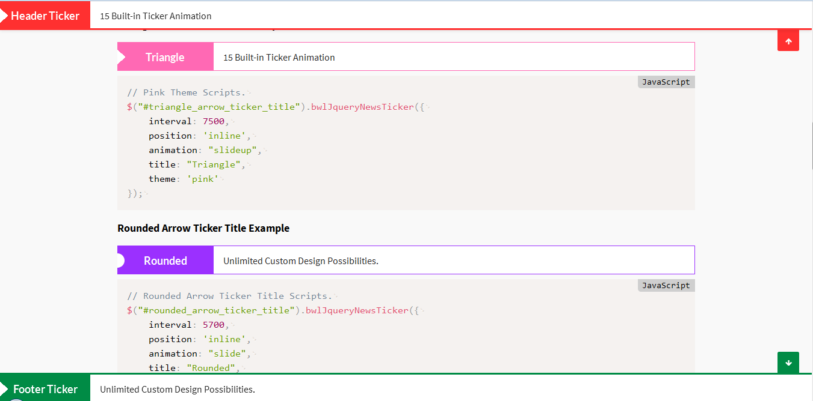

Created: 29/08/2015
Last Edited: 24/01/2017
By: Md Mahbub Alam Khan
Email: hkhan.cse@gmail.com
Web Site: www.bluewindlab.net
Thank you for purchasing BWL Sticky Animated News Ticker jQuery Plugin.
If you like this scripts, feel free to rate it five stars at CodeCanyon downloads section.
If you encounter any problems please do not give a low rating but contact me first. So I can help you.
Thank You!
BWL Sticky Animated News Ticker jQuery Plugin provide you a great way to presents news and RSS feeds in you're website. Plugin comes with extensive features with well commented jQuery & W3C validate HTML5 markup. So that, you can easily customize and setup plugin according to you're site need.
Ticker Positions:
Plugin allows you to display news ticker in 3 position. They are - Sticky Header Ticker, Sticky Footer Ticker and Inline Ticker.
You can change the ticker position quickly by just change the position value in settgins code. It's super easy to do!
Colorful Themes:
Plugin has 10 built-in & colorful skins/themes that allows you to display nice news ticker matched with you're site color.
Also, plugin gives you flexible options to create you're own color scheme.
Eye Catching Animations:
Plugin has 15 attractive animation scheme that will give an awesome and unique user experience(UX) for you're users
while they read news in ticker.
Easy Navigation System:
Quick and easy navigation system allows you're users to show/hide ticker panel, next and previous buttons for controlling news and
added stop news scroll feature on mouse hover.
RTL Enabled Ticker:
Plugin comes with RTL mode features that gives you quick option to display news ticker in Arabic language powered websites.
You just need to change RTL value as TRUE in settings and you're done.
Multiple News Ticker:
You can also display multiple news ticker instance in a single page and it's work nicely in mobile devices too.
Feed Parser Ticker:
You can popular sites RSS/ATOM feed in news ticker. If you want to display Envato products feed in you're website with referral links
you can easily do that with this plugin.
Extensive Help File:
Well documented code and descriptive documentation with example allows you to quickly implement news ticker in you're site.
Just Copy & Paste sample code and you're ready to use the plugin!

You must include the CSS Stylesheet in your page header. Make sure file paths are correct, check the 'index.html' file for an example:
<link rel="stylesheet" type="text/css" href="YOUR_PATH_HERE/css/font-awesome.min.css" />
<link rel="stylesheet" type="text/css" href="YOUR_PATH_HERE/css/animate.min.css" />
<link rel="stylesheet" type="text/css" href="YOUR_PATH_HERE/css/bwlJqueryNewsTicker.css" />
You must include the JS files in your page footer before body tag end. Make sure to check your include jquery.min.js file before bwlJqueryNewsTicker.min.js file and file paths are correct, check the 'index.html' file for an example:
<script type="text/javascript" src="js/jquery.min.js"></script>
<script type="text/javascript" src="js/bwlJqueryNewsTicker.min.js"></script>
To insert the news ticker into your page, simply open the 'index.html' file in the color you would like, and copy the code between these tags:
<!-- Start BWL Sticky Animated News Ticker --> <!-- End BWL Sticky Animated News Ticker -->
This plugin comes with very simple HTML layout to create unlimited no of news ticker elements.
Here is the general structure:
<!-- Start BWL Sticky Animated News Ticker -->
<div id="ticker_1" class="bwl_news_ticker"> <!-- You must need to add class="bwl_news_ticker" -->
<ul class="bwl_news_lists">
<li>
<a title="" href="#">News Text 1.</a>
</li>
<li>
<a title="" href="#">News Text 2.</a>
</li>
<li>
<a title="" href="#">News Text 3.</a>
</li>
<li>
<a title="" href="#">News Text 4.</a>
</li>
<li>
<a title="" href="#">News Text 5.</a>
</li>
</ul> <!-- End .bwl_news_lists -->
</div>
<!-- End BWL Sticky Animated News Ticker -->
This plugin comes with extensive options that allow you to configure everything from your index.html file without touching single line of code in plugin file. Lets take a look at options:
$.fn.bwlJqueryNewsTicker.config = {
position: 'header', // 3 Positions. header,footer,inline
hide_ticker: false, // Set value as True, if you want to hide ticker.
interval: 7000, // For each slide rotation.
animation: 'fade', // Available animations. rotate/roll/lightspeed/bounce/slideup/slide/fadeleft/faderight/flipx/wobble/shake/pluse/flash/swing/tada
height: '48', // Add any numeric value to set ticker custom height.
title: 'Breaking News', // Set Custom Ticker Title.
title_show: true, // Set value as False, if you hde the title box.
title_arrow_show: true, // Set value as False, if you want to hide the arrow before title.
title_arrow: 'triangle', // triangle/circle
title_bg: '#2c2c2c', // Set Ticker Title Background color.
title_color: '#FFFFFF', // Set Ticker Title Text Color.
ticker_content_bg: '#FFFFFF', // Set Ticker Content Background Color
ticker_content_color: '#2c2c2c', // Set Ticker Content Text Color
border_status: true, // Set value as false if you want to hide border.
custom_border: false, // Set value as true if you want to create you're own ticker border.'
border_size: 3, // Set border Width.
border_color: '#2c2c2c', // Set border color.
border_style: 'solid', //dotted, solid, dashed
btn_show: true, // Set value as false, if you want to hide Next/Prev Button.
bwl_up_icon: 'fa-arrow-up', // fa-arrow-up/fa-angle-double-up/fa-angle-up/fa-chevron-up/fa-caret-up/fa-chevron-circle-up
bwl_down_icon: 'fa-arrow-down', // fa-arrow-down/fa-angle-double-down/fa-angle-down/fa-chevron-down/fa-caret-down/fa-chevron-circle-down
bwl_prev_icon: 'fa-arrow-left', // fa-arrow-left/fa-angle-double-left/fa-angle-left/fa-chevron-left/fa-caret-left/fa-chevron-circle-left
bwl_next_icon: 'fa-arrow-right', // fa-arrow-right/fa-angle-double-right/fa-angle-right/fa-chevron-right/fa-caret-right/fa-chevron-circle-right
rtl: false, // Set value as True if you want to enable Right To Left Text Mode.
feed: false, // Set value as True if you want to parse RSS Feed
feed_url: 'http://codecanyon.net/feeds/new-codecanyon-items.atom', // Put A Valid RSS/Atom Feed link.
feed_location: 'header', // header/footer/inline
feed_limit: 5, // set any numeric value.
feed_load_icon: 'bnt_loader.gif', // Loading icon of feed icon
feed_link_new_window: true, // Set true if you want to open feed link in new window.
envato_user: '', // Set you're envato user name for Referral link. Example: xenioushk'
theme: 'black' // black(default)/red/green/blue/orange/pink/purple/olive/yellow/gray/chocolate
};
If you would like to edit a specific section of the site, simply find the appropriate label in the CSS file, and then scroll down until you find the appropriate style that needs to be edited.
/*========================================================================*/ /* TABLE OF CONTENT /*========================================================================*/ /* /* 01. TICKER COMMON STYLING /* 02. TICKER WITH STICKY HEADER /* 03. TICKER WITH STICKY FOOTER /* 04. INLINE TICKER /* 05. TICKER CONTROL BUTTON STYLING /* 06. RTL STYLING /* 07. THEME STYLING /* 08. RESPONSIVE STYLING /* /*========================================================================*/
I've included LESS files. You will get that files inside of css folder. Using this file you can easily customize theme colors. Open "variables.less" file and you will see 5 Predefined color sets already added in that less file. Just change color scheme according to your choice and compile that less file.
@ticker-title-font: 'Lato', sans-serif; @ticker-content-font: 'Source Sans Pro', sans-serif; @ticker-title-bg: #2c2c2c; @ticker-title-text: #FFFFFF; @ticker-border: #2c2c2c; @ticker-content-bg: #FFFFFF; @ticker-text-color: #262626; @ticker-link-color: #000000; @ticker-red-theme: #FF3030; @ticker-green-theme: #008B45; @ticker-blue-theme: #0000EE; @ticker-orange-theme: #FF8000; @ticker-pink-theme: #FF69B4; @ticker-purple-theme: #9B30FF; @ticker-olive-theme: #698B22; @ticker-yellow-theme: #ffd602; @ticker-gray-theme: #8B8878; @ticker-chocolate-theme: #8B4513;
- Include "images" folder and it's files.
- Include "rss_parser.php" file.
- Initial Release.
- Fixed RSS feed parse issue.
- Update documentation.
- Initial Release.
- Ideas & Coded By Md Mahbub Alam Khan
- Icons By FontAwesome
Once again, thank you so much for purchasing BWL Sticky Animated News Ticker jQuery Plugin.
Md. Mahbub Alam Khan